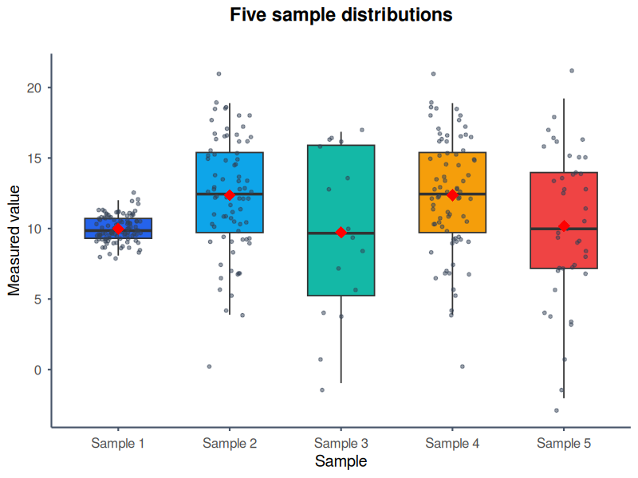

Distribution summary
Display the median, first and third quartiles, whiskers and individual outliers for every sample.
Turn CSV, Excel or pasted numeric data into a publication-ready box-and-whisker plot without writing code.
Display the median, first and third quartiles, whiskers and individual outliers for every sample.
Overlay centred, jittered or bee-swarm points so readers can see the data behind the summary.
Add sample means and 83%, 90% or 95% confidence intervals when those statistics suit the analysis.

This 6-minute tutorial from TogoTV demonstrates data upload, box, violin and bean plots, colours, labels, orientation, grids and figure downloads. The narration and interface labels are in Japanese, while the complete BoxPlotR workflow is shown on screen.
Watch the BoxPlotR tutorial on YouTube.
The centre line is the sample median and the box spans the first to third quartile. BoxPlotR supports Tukey whiskers, minimum-to-maximum Spear whiskers and Altman 5th-to-95th-percentile whiskers. Read the whisker definition guide before choosing a non-default method.